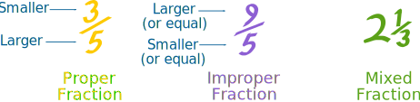
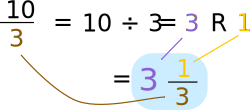
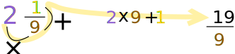

Improper Fractions
  |
| 74 |
| (seven-fourths or seven-quarters) |
An Improper Fraction has a top number
larger than (or equal to) the bottom number.
It is usually "top-heavy"
More Examples
| 32 | 73 | 1615 | 1515 | 1005 |
See how the top number is bigger than (or equal to) the bottom number?
That makes it an Improper Fraction, (but there is nothing wrong about Improper Fractions).
Three Types of Fractions
There are three types of fraction:

Fractions
A Fraction (such as 7/4) has two numbers:
NumeratorDenominator
The top number (the Numerator) is the number of parts we have.
The bottom number (the Denominator) is the number of parts the whole is divided into.
Example: 7/4 means:
- We have 7 parts
- Each part is a quarter (1/4) of a whole
So we can define the three types of fractions like this:
| Proper Fractions: | The numerator is less than the denominator |
|---|---|
| Examples: 1/3, 3/4, 2/7 | |
| Improper Fractions: | The numerator is greater than (or equal to) the denominator |
| Examples: 4/3, 11/4, 7/7 | |
| Mixed Fractions: | A whole number and proper fraction together |
| Examples: 1 1/3, 2 1/4, 16 2/5 |
Improper Fraction
So an improper fraction is a fraction where the top number (numerator) is greater than or equal to the bottom number (denominator): it is top-heavy.
|
44 |
Can be Equal
What about when the numerator is equal to the denominator? For example 4/4 ?
Well it is the same as a whole, but it is written as a fraction, so most people agree it is a type of improper fraction.
Improper Fractions or Mixed Fractions
We can use either an improper fraction or a mixed fraction to show the same amount.
For example 134 = 74, as shown here:
| 134 | 74 | |
 |
= | |
Converting Improper Fractions to Mixed Fractions
To convert an improper fraction to a mixed fraction, follow these steps:
|
|
Example: Convert 114 to a mixed fraction.
Divide:
Write down the 2 and then write down the remainder (3) above the denominator (4).
Answer:
2 34
That example can be written like this:
Example: Convert 103 to a mixed fraction.

Answer:
3 13
Converting Mixed Fractions to Improper Fractions
To convert a mixed fraction to an improper fraction, follow these steps:
|
|
Example: Convert 325 to an improper fraction.
Multiply the whole number part by the denominator:
Add that to the numerator:
Then write that result above the denominator:
175
We can do the numerator in one go:
Example: Convert 219 to an improper fraction.

Are Improper Fractions Bad ?
NO, they aren't bad!
For mathematics they are actually better than mixed fractions. Because mixed fractions can be confusing when we write them in a formula: should the two parts be added or multiplied?
| Mixed Fraction: | What is: | 1 + 214 ? | ||||
|---|---|---|---|---|---|---|
| Is it: | 1 + 2 + 14 | = 314 ? | ||||
| Or is it: | 1 + 2 × 14 | = 112 ? | ||||
| Improper Fraction: | What is: | 1 + 94 ? | ||||
| It is: | 44 + 94 = 134 |  |
But, for everyday use, people understand mixed fractions better.
Example: It is easier to say "I ate 214 sausages", than "I ate 94 sausages"
We Recommend:
- For Mathematics: Improper Fractions
- For Everyday Use: Mixed Fractions